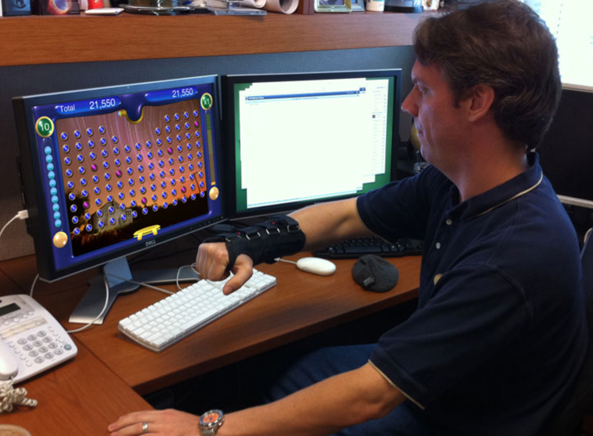

AIM LAB
Mahidol University
Lab Meeting
Weekly Journal Discussion
The Design of an Interactive Stroke Rehabilitation Gaming System (2011)
Week 8
Introduction
- In the past two years, stroke-related medical costs have
increased 20% (in US) whilethe numbers of clinical treatment sessions have declined. - There is a need to create a home-based stroke rehabilitation system that is affordable but remains effective and interesting.
Approaches to Stroke Rehabilitation
- Traditional customary care involves
time intensive treatment from an occupational therapist. - performing repetitive movements > induce motor learning > improve the movement behaviour of the stroke survivor
- Several alternative rehabilitation methods have been proposed:
- Constrained Induced Movement Therapy (CIMT)
CIMT is only useful for a sub-group of the stroke population because of the mental and psychological requirements in having self-discipline to stick with the program - Robot Assisted Rehabilitation
not cost effective for small business nor is it feasible for the home environment - Studies have shown that the Wii can have a beneficial health impact on stroke survivors.
require precise dexterous movements completing game activities under extreme time pressure
Benefits of gaming
- Playing video games produces gains in certain physical and cognitive abilities.
- Previous studies using video games as the
primary intervention have found improvements in: reaction time, short-term and long-term memory, attention, andspatial ability - Different approaches in game design for rehabilitation:
- focused on memory and prose recall
- encode specific rehabilitative movements as part of an interactive gaming experience
Purpose
To create a compelling and fun game/experience that users wouldenjoy playing and that wouldalso improve the mobility and dexterity of their stroke-affected arm
Rehabilitation Medicine + Computer Science + Engineering
System Hardware Architecture
Input Devices
- Stroke survivors are often not able to grasp and manipulate objects with their affected hand.
- Therefore careful consideration for the input device is needed
Wii Remote with IR beacons are used for 2D tracking- The raw 2D forearm tracking data is filtered using a
spring-damper function - After filtering the data were used for
simple inverse-kinematic (IK) model of a human arm
System Display
- The development and testing of the system was done on a personal computer.
A future design goal for the game display would be toincorporate a low cost portable console that could connect directly to a television.
System Software Architecture
- The system was developed in the
Unity 3D game engine. - Unity provides a rapid game prototyping and development environment and based on the Mono .NET software framework
System Operation and Content
- A number of video game styles and genres were considered as prototypes, but the popular casual game Peggle was chosen.
- Peggle itself is loosely based on older, mechanical games such as pinball.
- The player’s score accumulates as pegs are hit and destroyed.
This greatlysimplified and sped up the graphical and game play design phases and allowed more time and resources to be spent on augmenting and adapting the game to support stroke rehabilitation in the form of encouraging specific arm motions and exercises.
System Operation and Content
- System based on Peggle’s game but is augmented to facilitate stroke-affected arm motions and exercises.
System Operation and Content
System Operation and Content
The system prototype
System Design and Usability
Knowledge gathering exercises were conducted withtwo experts in the field of stroke rehabilitation to ensure that the type of arm motions and exercises to be encoded into the game could lead to improvements in stroke survivors
- In designing the game, a number of design criteria were developed which would facilitate stroke rehabilitation movements and exercises yet still be fun and compelling.
- The game rules and mechanics should be simple and easily understood with the right balance of skill, chance and strategy.
Design Criteria
- The game design required additional considerations due to the
uniqueness and limitations of the target users and to the functional requirements for successful physical rehabilitation. - In particular, to achieve true physical gains the players would need to spend significant time in the environment.
- A game that is boring and tedious or an interface that is too physically strenuous would be unacceptable.
- A game mechanic that is too easily mastered or that is too difficult can cause player frustration and nullify benefits of the system.
- Designing an environment that leads to a feeling of engagement, immersion and “oneness” with the system is
more of an art than a science. - However, extensive research exists in the area of computer interfaces including the new area of “serious” game design.
Usability Testing
- Due to limited budget and timeline a case study was conducted where a recent stroke survivor volunteered to evaluate the system.
- The stroke survivor had persistent hemiparesis that lead to
impaired upper extremity function but hadno severe weakness or sensory impairment of the upper extremity. - Further, the individual stated that the prototype Peggle-based game was
fun and conducive to extended use , a primary goal of this research.
Conclusion and Future Work
- This paper has described the features, design, implementation and operation of the stroke rehabilitative gaming system and preliminary findings from a case-study.
- The system currently supports arm-tracking game control in 2D using only the Wii Remote’s IR camera tracking ability
- Future development will include also utilizing the Wii Remote’s three-axis accelerometers and the three-axis gyroscopes of the MotionPlus extension device.
- Full, 6 DOF tracking of the player’s arm will allow a much larger range of trackable arm motions as well as many more exercises and motions to be encouraged by stroke rehab game play.